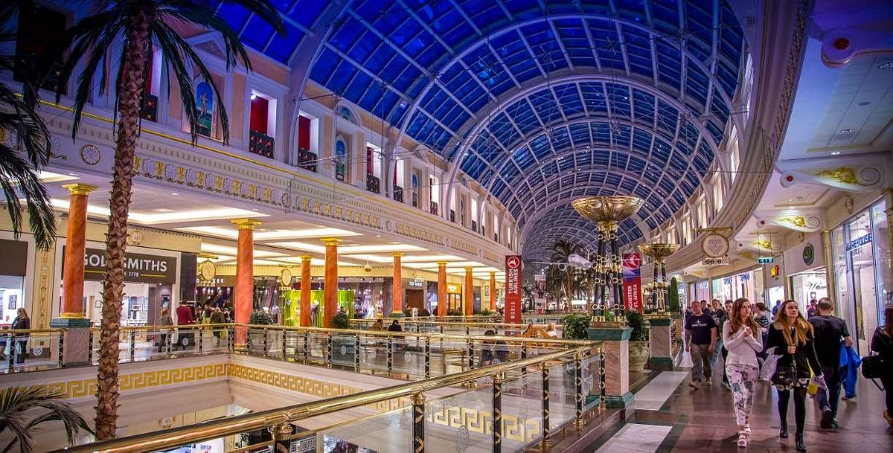
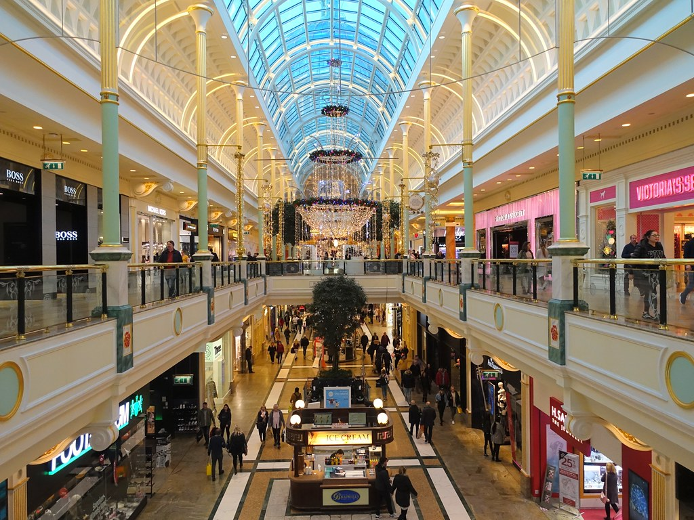
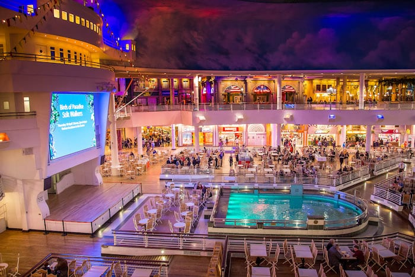

Set in Trafford Park, Greater Manchester, England, is a big business centre called The Trafford Centre. Offering a large selection of dining, shopping, and entertainment opportunities, it is a well-liked attraction for both locals and visitors. The Peel Group created the complex, which opened its doors in 1998 and soon rose to the top of the area's most popular tourist destinations. DESIGN AND ARCHITECTURE: The Trafford Centre is known for its unique architecture and design, which includes a huge conical ceiling that covers the whole retail area. A set of steel arches support the roof, giving customers a roomy and light-filled atmosphere. A number of themed areas can also be found in the centre, like the Great Hall, which has a big fountain and statues, and Canal Street, which replicates the feel of a classic European retail district. TRANSPORTATION AND ACCESSIBILITY: There is lots of free parking at the Trafford Centre, making it simple to get to by vehicle. Public transit is also well-connected to it. The Metrolink tram system offers direct access to the centre from Manchester's city centre and other nearby places. Also, there is a bus station on the property with frequent service to a number of locations.
Fast food chains and luxury restaurants are just a few of the many dining options available at the Trafford Center. The center provides a range of entertainment amenities, including IMAX theater, bowling alley, and an indoor playground for kids.The Trafford Center is where visitors can find SEA LIFE Manchester Aquarium, which showcases a diverse range of marine life and provides interactive exhibits..
There are numerous shops and retailers in Trafford Center that cater to all types of shoppers.The range of retail products includes fashion, beauty and electronics, as well as home appliances. Popular retailers at Trafford Center include well-known brands such as Selfridges, John Lewis and Partners, Marks and Spencer, Apple, Zara, HandM and more. These stores offer customers the opportunity to buy high quality items, fashion items, new technology products and other types of consumer goods. The Trafford Center is not just a shopping mall; it also has many restaurants.A range of international cuisines can be found at various restaurants, including TGI Fridays, Nando's and Wagamama.The center's dining options include Pizza Express, Five Guys, and many other places to enjoy food.
The Trafford Centre prioritizes delivering exceptional customer service to its patrons. Numerous stores boast well-informed and amiable staff members who are readily available to address any inquiries or concerns. Moreover, the centre has a specialized customer service team readily available to aid with any potential problems that may arise during your visit. This high standard of customer care guarantees that shoppers feel embraced and well-attended to throughout their shopping experience.Moreover, the centre has a specialized customer service team readily available to aid with any potential problems that may arise during your visit. This high standard of customer care guarantees that shoppers feel embraced and well-attended to throughout their shopping experience. Thousands of people visit the largest IKEA store in the UK, which is located in the Trafford Centre, each year. This enormous store, which is over 400,000 square feet in size, has a huge selection of furniture, home goods, and other items. With a large selection of dining, entertainment, and retail options, the Trafford Centre is a unique destination for leisure and shopping. Both locals and tourists favor it because of its many attractions, indoor canal system, and striking architectural design.
<